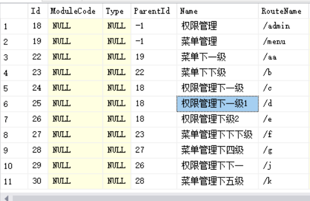
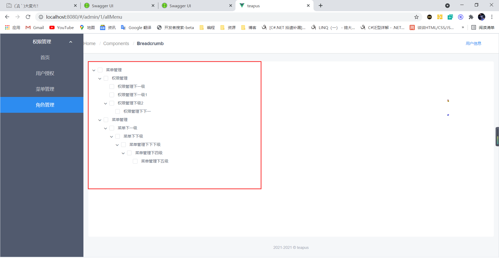

在 Iview 中使用 tree 组件遍历菜单下面的所有子节点
# 菜单表的数据结构
[Key] | |
public int Id { get; set; } | |
// 模块 | |
public string? ModuleCode { get; set; } | |
// 类型 | |
public int? Type { get; set; } | |
// 父级 | |
public int? ParentId { get; set; } | |
// 名称 | |
public string? Name { get; set; } | |
...... |
上面展示了菜单表的部分字段,在这里我们主要关注两个字段:Id,ParentId。上下菜单级的关联主要用到这个字段。当菜单无上级时。ParentId为-1
# 绑定到页面的数据结构
data() { | |
return { | |
baseData: [ | |
{ | |
expand: true, | |
title: "菜单管理", | |
children: [], | |
}, | |
], | |
}; | |
}, |
# 初始化一级菜单
async loadInit() { | |
var result = await fetch(method.GET, "https://localhost:5001/api/Query", { | |
pageSize: 99999, | |
pageIndex: 1, | |
}); | |
// 遍历一级菜单 | |
result.data.forEach((curr, index, arr) => { | |
if (curr.parentId == -1) { | |
var children = this.childernTree(arr, curr.id, [], []); | |
var obj = { | |
title: curr.name, | |
expand: true, | |
children: children, | |
}; | |
this.baseData[0].children.push(obj); | |
} | |
}); | |
}, |
# 递归遍历下面的所有子节点
childernTree(arr, id, arry, arryChildren) { | |
// 找到当前当前子节点的下一级 | |
var result = arr.filter((curr, index, childrenArr) => { | |
return curr.parentId == id; | |
}); | |
// 递归出口 | |
if (result.length == 0) { | |
return arry; | |
} | |
result.forEach((curr, index, arr1) => { | |
if (arry.length != 0) { | |
// 核心 (向后面的子节点插入数据) | |
arryChildren.push({ | |
title: curr.name, | |
expand: true, | |
children: [], | |
}); | |
} else { | |
arry = [ | |
{ | |
title: curr.name, | |
expand: true, | |
children: [], | |
}, | |
]; | |
arryChildren = arry; | |
} | |
// 当有多个同级菜单 | |
if (arry.length - 1 < index) { | |
arry.push({ | |
title: curr.name, | |
expand: true, | |
children: [], | |
}); | |
arryChildren = arry; | |
} | |
this.childernTree(arr, curr.id, arry, arryChildren[index].children); | |
}); | |
return arry; | |
}, |
# 数据库中的数据

# 渲染到页面的数据
